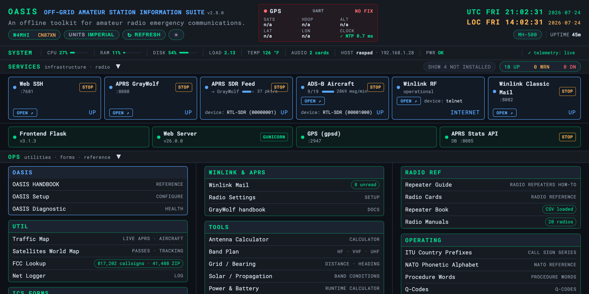
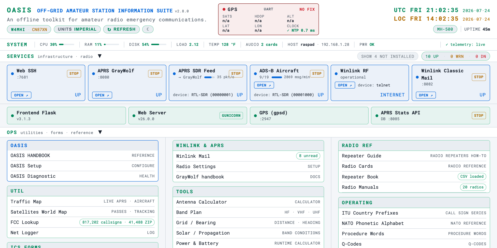

Themes & Units
Dark / light and imperial / metric, remembered per browser
Two dashboard preferences follow the operator, stored per browser in
localStorage: the colour theme and the measurement units. Both this
handbook and the dashboard honour their own theme toggle.
Dark / light
The dashboard defaults to your system preference and can be flipped with the theme control.


Imperial / metric
A single Imperial / Metric pill switches the terrestrial measured values — temperature, aircraft altitude, ground speed, distance — across the dashboard and tools at once. The preference is remembered per browser, so each operator’s device shows the units they prefer.
Satellite readouts are the deliberate carve-out. Slant range,
altitude and every other figure on the Satellites page
and the kiosk satellite card are always km and are never routed
through the units toggle. This is a contract, not an oversight — it is written
into common/js/sat-look.js. Satellite and amateur-radio work is metric
worldwide (we speak of the 2 m band, not the 6.6 ft band), and converting
would put OASIS at odds with every other tool an operator has open. The toggle is for
readouts where the preference is a real preference — aircraft altitude in feet is
correct aviation convention; a satellite’s range in miles is not correct
anything.
This handbook’s own [ dark ] / [ light ] toggle (top right) is independent of the dashboard’s theme — it’s stored under its own key so the docs and the dashboard can differ.
Troubleshooting
| Symptom | Cause & fix |
|---|---|
| The theme resets every visit | The choice lives in localStorage (oasis_theme). A private/incognito window or blocked storage forgets it. |
| Distances/temps in the wrong system | Toggle the UNITS pill (imperial ↔ metric). It is per-client and also stored in localStorage. |
| The units pill doesn’t change the satellite readouts | Working as designed. Satellite range and altitude are always km — see the note above. Nothing to fix. |